Part 1
Installation
Download, install, update and uninstall FlowNote. Linux comes first (chapter 2), then Windows (chapter 3).
Before you start
Which file do I need?
| Your computer | Download | Size |
|---|---|---|
| Linux (64-bit) | FlowNote-<version>-linux-x86_64.run: one-file installer (recommended)or FlowNote-<version>-linux-x86_64.tar.gz: the same, as a folder | ≈ 185 MB |
| Windows 10 / 11 (64-bit) | FlowNote-<version>-windows-x64.zip: setup wizard, MSI package and uninstaller | < 100 MB |
Not sure if your computer is 64-bit? On Linux run uname -m in a terminal; it should print x86_64. On Windows open Settings → System → About and look for 64-bit operating system.
System requirements
| Linux | Windows | |
|---|---|---|
| Operating system | Any 64-bit distribution. The system-wide install needs a Debian/Ubuntu-based one (Ubuntu, Debian, Linux Mint, Pop!_OS, elementary…). | Windows 10 or Windows 11, 64-bit |
| Disk space | ≈ 280 MB (system-wide) or ≈ 110 MB (just for me), plus your notes | Less than 100 MB, plus your notes |
| Permissions | Your password only for the system-wide install | No administrator rights for the setup wizard; the MSI needs them |
| Other | A desktop session. For graphical installer windows, zenity or kdialog (most desktops have one) | Microsoft Edge WebView2 (built into Windows 11; added automatically on Windows 10) |
Already using FlowNote?
You don't need to uninstall first. Installing a newer version upgrades FlowNote in place and keeps all your notes. If you want an extra safety copy, see Backing up your notes in chapter 4.
Optional: check the download
Each download comes with checksums so you can confirm it isn't damaged:
# Linux, in the download folder $ sha256sum -c FlowNote-<version>-linux-x86_64.sha256 FlowNote-<version>-linux-x86_64.run: OK
# Windows PowerShell — compare with the value in FlowNote-<version>-windows-x64.zip.sha256 PS> Get-FileHash .\FlowNote-<version>-windows-x64.zip -Algorithm SHA256
Installing on Linux
Choose one of the three methods below. Method A is the easiest.
Method A: one-file installer (graphical)
- Download
FlowNote-<version>-linux-x86_64.run(for example into your Downloads folder). - Allow it to run. In your file manager, right-click the file → Properties → Permissions → tick Allow executing file as program (in KDE Dolphin: Is executable). Close the dialog.
- Double-click the file. If your file manager asks what to do, choose Run (not Display or Open in text editor).
- Welcome. A FlowNote window shows the version being installed. Click OK.
- Release notice. Read it and click Continue (Cancel stops without changing anything).
- Choose the install type and click OK:
- For everyone on this computer: a normal system package. You'll be asked for your password in the next step. Recommended on Ubuntu, Debian and Mint.
- Just for me: no password, works on every distribution, installed in your home folder.
- Enter your password if asked (system-wide install only), then wait while a progress window is shown. This takes from a few seconds to a minute.
- Finished. The last window says where FlowNote was installed and asks Start FlowNote now? Click Yes to open it.
From now on, open FlowNote from your application menu: look for FlowNote under Office, or search for "FlowNote".
Method B: one-file installer in a terminal
The same installer asks the same questions as text when you run it in a terminal. Type the answer and press Enter; pressing Enter alone takes the default (marked * or written in capitals, like [Y/n]).
- Open a terminal in the download folder (right-click inside the folder → Open in Terminal, or
cd ~/Downloads). - Make the installer executable and start it:
$ chmod +x FlowNote-*.run $ ./FlowNote-*.run
- Answer the questions. A typical session looks like this:
Welcome to the FlowNote 0.1.0 installer. ... Continue? [Y/n] y How do you want to install FlowNote? 1) * For everyone on this computer (system package, needs your password) 2) Just for me (anna), no password needed Choose 1-2 [default: the one marked *, q to cancel]: 2 ==> Copying FlowNote to /home/anna/.local/opt/flownote ==> Adding FlowNote to the app menu ==> FlowNote 0.1.0 is installed for anna (in /home/anna/.local/opt/flownote). Start FlowNote now? [Y/n] y
- If you chose For everyone, type your password when
sudoasks for it (nothing appears on screen while you type; that's normal).
Method C: from the bundle folder
Use this if you downloaded the .tar.gz, or want to install without any questions (for example on several computers).
- Unpack the bundle and go into its folder:
$ tar xzf FlowNote-<version>-linux-x86_64.tar.gz $ cd FlowNote-<version>-linux-x86_64
- Run the installer with the options you want:
$ ./install.sh # guided, like Method B $ ./install.sh --appimage --silent # just for me, no questions $ ./install.sh --deb --silent # for everyone, no questions (asks for sudo password) $ ./install.sh --help # all options
| Option | Meaning |
|---|---|
--deb | System-wide install (the .deb package) |
--appimage | Just-for-me install (the AppImage) |
--silent or -y | Don't ask anything; use defaults |
--gui / --cli | Force graphical windows / terminal questions |
--launch / --no-launch | Start (or don't offer to start) FlowNote at the end |
Advanced users can also install the packages directly: sudo apt install ./FlowNote-<version>-amd64.deb, or make the .AppImage executable and run it. The installer does this for you and also adds the menu entry, the flownote command and an uninstaller.
The "just for me" install is an AppImage, which normally needs the FUSE 2 library to start quickly. If your system doesn't have it, the installer sets FlowNote up to unpack itself on each start instead. That works fine but takes a few seconds longer. For faster starts, run sudo apt install libfuse2t64 (Ubuntu 24.04 and later; libfuse2 on older releases), then run the installer again.
Check that it worked
- FlowNote appears in your application menu.
- Typing
flownotein a new terminal starts it. (Just-for-me install: if the command isn't found, log out and in again once, or use~/.local/bin/flownote.) - FlowNote opens with empty Folders and Pages panels, or with your existing notes after an upgrade.
Where FlowNote is installed
| For everyone (.deb) | Just for me (AppImage) | |
|---|---|---|
| Program | /opt/FlowNote | ~/.local/opt/flownote |
| Command | /usr/bin/flownote | ~/.local/bin/flownote |
| Menu entry | System-wide | ~/.local/share/applications |
| Uninstaller | uninstall.sh in the bundle, or sudo apt remove flownote | ~/.local/opt/flownote/uninstall.sh |
| Your notes (both) | ~/.config/@flownote/electron/ | |
| Install log (both) | ~/.cache/flownote-install.log | |
Installing on Windows
Choose one method. Method A suits almost everyone.
Method A: setup wizard (recommended)
- Download
FlowNote-<version>-windows-x64.zip. - Unzip it. Right-click the zip → Extract All… → Extract. A folder with the same name opens.
- Start setup. Double-click
FlowNote_<version>_x64-setup.exe. - SmartScreen warning. Preview builds aren't code-signed yet, so Windows may show "Windows protected your PC". Click More info, check the app name says FlowNote, then click Run anyway.
- Language. Choose English, Deutsch, Français or Español and click OK.
- Welcome page. Click Next.
- Release notice. Read it and click I Agree.
- Install location. Keep the suggested folder (in your user profile, no admin rights needed) or click Browse… to choose another. Click Next.
- Start Menu folder. Keep FlowNote and click Install.
- Wait a few seconds while files are copied.
- Finish. Tick Create desktop shortcut if you want an icon on the desktop. Leave Run FlowNote ticked and click Finish.
Your Start Menu → FlowNote folder now contains FlowNote, FlowNote Guide (this guide) and Uninstall FlowNote.
Method B: MSI package (all users / IT departments)
- Unzip the download as above.
- Double-click
FlowNote_<version>_x64_en-US.msi. - Click through the installer: Next → accept the release notice → Next → Install.
- Click Yes when Windows asks for administrator permission (the MSI installs for every user of the PC).
- Click Finish, then open FlowNote from the Start Menu.
Method C: unattended install
For scripts and managed deployments, open PowerShell or Command Prompt in the unzipped folder:
# per user, no admin, no windows shown PS> .\FlowNote_<version>_x64-setup.exe /S # all users (run as administrator) PS> msiexec /i FlowNote_<version>_x64_en-US.msi /qn /norestart
Check that it worked
- FlowNote appears in the Start Menu (and on the desktop, if you chose a shortcut).
- Settings → Apps → Installed apps lists FlowNote with the version you installed.
- FlowNote opens with empty Folders and Pages panels, or with your existing notes after an upgrade.
Where FlowNote is installed
| Setup wizard | MSI | |
|---|---|---|
| Program | %LOCALAPPDATA%\FlowNote (unless you changed it) | C:\Program Files\FlowNote |
| Your notes (both) | %APPDATA%\com.sandeep.flownote\ | |
Updating and backing up
Updating to a new version
- Close FlowNote (the installer also closes it for you if it's running).
- Download the new version and install it exactly as described above, using the same install type as before.
- Linux: the installer says "FlowNote x is installed. Upgrade it to y?"; answer Yes.
- Windows: run the new setup wizard; it replaces the old version.
- Open FlowNote. Your folders and pages are all still there.
Running the installer for the version you already have offers to repair it, which fixes a damaged install without touching your notes.
Backing up your notes
- Close FlowNote.
- Copy the whole notes folder to a USB drive or another safe place:
- Linux:
~/.config/@flownote/electron/(in the file manager press Ctrl+H to show hidden folders) - Windows: type
%APPDATA%\com.sandeep.flownoteinto the File Explorer address bar
- Linux:
- To restore, close FlowNote and copy the folder back to the same place.
For automatic, encrypted backups across computers, set up Backup & Sync (chapter Keeping your notes safe in Part 2).
Uninstalling
Uninstalling removes the program but keeps your notes unless you choose to delete them. Reinstalling later brings them back automatically.
Linux
- Close FlowNote.
- Start the uninstaller. Any one of:
- Double-click
uninstall.shin the unpacked bundle folder (choose Run). - Just-for-me install: run
~/.local/opt/flownote/uninstall.sh(works without the download). - In a terminal in the bundle folder:
./uninstall.sh
- Double-click
- Confirm that you want to remove FlowNote.
- Choose what happens to your notes: answer No to keep them (default), or Yes to delete them permanently.
- Enter your password if asked (system-wide install only). A final message confirms that FlowNote is uninstalled.
$ ./uninstall.sh --keep-data # remove FlowNote, keep notes, no questions about them $ ./uninstall.sh --remove-data # remove FlowNote and delete notes $ sudo apt remove flownote # system-wide install only, keeps notes
Windows
- Close FlowNote.
- Open Start → FlowNote → Uninstall FlowNote, or Settings → Apps → Installed apps, click ⋯ next to FlowNote and choose Uninstall.
- On the confirmation page, tick Delete the application data only if you also want to delete your notes.
- Click Uninstall, then Close when it's done.
Alternatively, double-click Uninstall FlowNote.cmd in the unzipped download folder. It finds either kind of install (wizard or MSI) and shows a small window with an Also delete my notes checkbox. For scripts:
PS> powershell -ExecutionPolicy Bypass -File .\Uninstall-FlowNote.ps1 -Silent -KeepData PS> powershell -ExecutionPolicy Bypass -File .\Uninstall-FlowNote.ps1 -Silent -RemoveData
Solving installation problems
Linux
| Problem | Solution |
|---|---|
Double-clicking the .run file opens a text editor or does nothing | It isn't executable yet: see Method A step 2, or run chmod +x FlowNote-*.run. Some file managers need you to pick Run or Execute when asked. |
| No installer windows appear, only terminal questions | Neither zenity nor kdialog is installed. Answer in the terminal, or install one: sudo apt install zenity. |
| "These packages are built for 64-bit PCs" | FlowNote currently needs an x86_64 computer; ARM devices (e.g. Raspberry Pi) aren't supported yet. |
| The system-wide install fails | Check your password and that no other update/software centre is running, then try again. Or choose Just for me. Details are in ~/.cache/flownote-install.log. |
| "The system install needs apt" | Your distribution isn't Debian/Ubuntu-based. Use the Just for me install. |
| Note about FUSE 2 during install; FlowNote starts slowly | Optional speed-up: sudo apt install libfuse2t64 (Ubuntu 24.04+) or libfuse2 (older), then run the installer again. |
flownote: command not found | Just-for-me install: log out and back in, or run ~/.local/bin/flownote. FlowNote is also in the app menu. |
Windows
| Problem | Solution |
|---|---|
| "Windows protected your PC" | Click More info → Run anyway. Preview installers aren't code-signed yet. |
| Setup says FlowNote is running | Close FlowNote (check Task Manager if no window is open), or let setup close it, then continue. |
| The MSI asks for an administrator | The MSI installs for all users. Use the setup wizard instead for a per-user install without admin rights. |
| Antivirus blocks the installer | Make sure the file came from the official download and its checksum matches, then allow it in your antivirus. |
| FlowNote doesn't start on Windows 10 | Install Microsoft Edge WebView2 Runtime from microsoft.com, then start FlowNote again. |
Uninstall-FlowNote.ps1 "cannot be loaded because running scripts is disabled" | Use Uninstall FlowNote.cmd, or start PowerShell with -ExecutionPolicy Bypass as shown above. |
Still stuck? Open an issue at github.com/sandeep12biswas/noteApp and attach ~/.cache/flownote-install.log (Linux) or a screenshot of the error (Windows).
Part 2
User manual
Every FlowNote feature: what it does, how to use it step by step, and what it looks like.
Welcome to FlowNote
FlowNote is a note-taking app with a free-form canvas. Click anywhere on a page and start writing: there are no fixed lines or boxes to fight with. It runs on Linux and Windows, works fully offline, and can keep your devices in sync with end-to-end encryption.
Notes are organised the way you'd organise a binder:
- Folders (left panel) hold related pages, and can contain sub-folders.
- Pages (middle panel) are the notes inside the selected folder.
- The editor (right) is the page itself: a canvas where every click on an empty spot starts a new block of text called a segment.
Everything is saved automatically as you type. There is no Save button.
- Tables. Insert a table from the "/" menu or Insert → Table, type with Tab between cells, and add or remove rows and columns from the ribbon. The header row is coloured and always readable.
- Table templates. Save a table's layout (and optionally its contents) as a template, then insert it anywhere, including by typing
/tableand its name. - Many more colours. The Page colour and segment colour menus offer a grid of shades for ten colour families, your recently used colours, and a built-in colour wheel under More colours….
- Delete a segment directly from its right-click menu, with a few seconds to Undo.
- Page names can start with a lowercase letter, and keep the case you type.
Features at a glance
| Area | Features |
|---|---|
| Organising | Folders and sub-folders, folder icons, page counts, natural sort, drag to reorganise |
| Writing | Click-anywhere canvas, segments (move, resize, colour, delete with Undo), Linear mode, spell check |
| Formatting | Fonts, text styles, highlight and text colour, lists and checklists, headings, quotes, Format Painter |
| Inserting | "/" block menu, code blocks with highlighting, tables and table templates, pictures and file attachments |
| Drawing | Pen, marker and eraser in five colours |
| Finding | Search by page name or by contents |
| Appearance | Light/dark theme, page colours with shades and a colour wheel, contrast assistant, zoom |
| AI | Draft text with Claude, Gemini, OpenAI, or a local model through Ollama |
| Plugins | New block types, such as the Spreadsheet plugin |
| Sync | End-to-end encrypted Backup & Sync via OneDrive, Google Drive or any folder |
A tour of the window
When you start FlowNote for the first time the window is empty. You'll create your first folder and page in the next chapter.
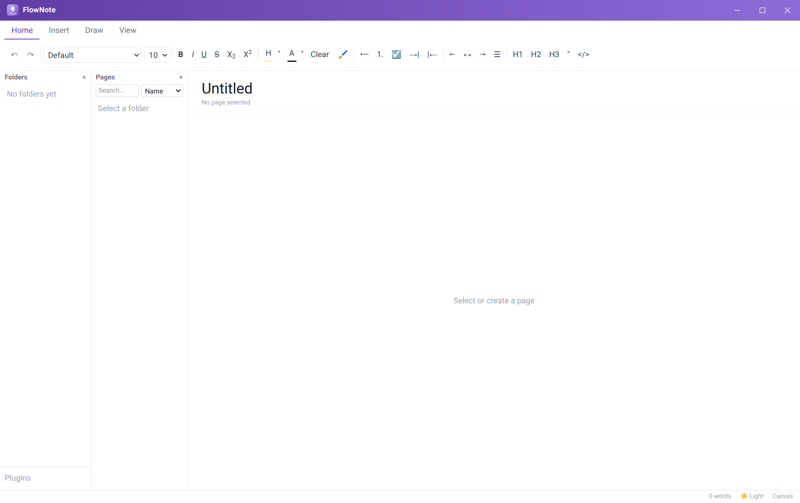
Once you have some notes, the window looks like this:
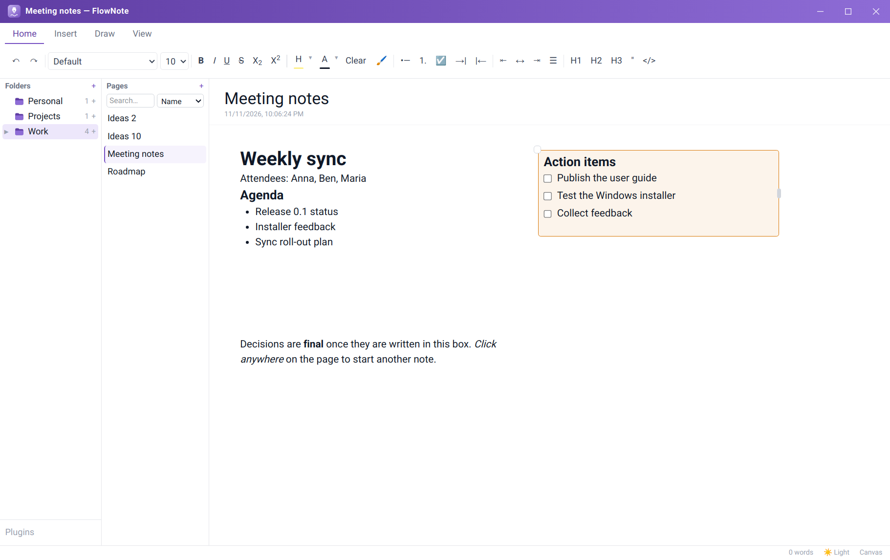
| Area | What it's for |
|---|---|
| Ribbon (top) | Tabs of tools: Home (text formatting), Insert (tables, AI), Draw (ink), View (zoom, page colour, sync). |
| Folders panel (left) | Your folders and sub-folders, each with a count of its pages. Plugins at the bottom opens the Plugin Manager. |
| Pages panel (middle) | The pages in the selected folder, a + button for a new page, and search. |
| Editor (right) | The page title and date, and the canvas you write on. |
| Status bar (bottom) | Sync status, the theme switch (System / Light / Dark), and the editing mode (Canvas / Linear). |
Drag the thin borders between the panels to make them wider or narrower.
Folders and pages
Creating your first page
What it does. The middle panel lists the pages in the selected folder. Creating a page always asks where it belongs first, so pages never end up loose.
How to use it.
- Click + next to Pages (or right-click an empty part of a panel and choose New page).
- Choose New folder and type a folder name, or choose Existing folder and pick one. Click Next.
- Type the page name and click Create.
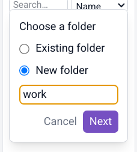
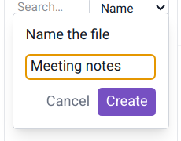
Page names must start with a letter, lowercase or capital (not a number or symbol), and keep the case you type: meeting notes stays meeting notes. Folder names are capitalised for you as you type: work becomes Work. The same page name can be used in different folders.
Folders and sub-folders
What it does. The left panel shows only folders, never pages, so the structure of your notebook is always visible at a glance. Each folder shows how many pages it holds. Folders can contain sub-folders up to 7 levels deep; folders with sub-folders get an arrow to expand or collapse them.
How to use it.
- New folder: click + next to Folders, type a name, press Enter.
- Sub-folder: hover over a folder and click its small +, or right-click the folder and choose New subfolder.
- Move a folder: drag it onto another folder, or onto empty space to make it a top-level folder.
- Rename or delete: right-click the folder. Deleting a folder deletes the pages inside it, so you're asked to confirm.
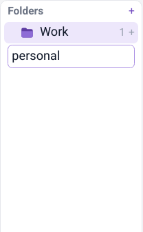
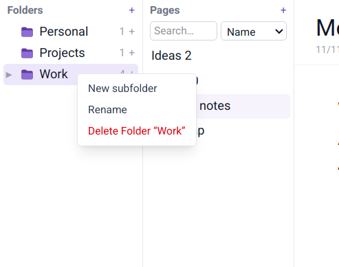
Folder icons
What it does. Gives each folder its own icon so you can find it quickly: briefcase for work, house for home, lightbulb for ideas.
How to use it. Click a folder's icon and pick one. Lavender icons match FlowNote's colours (a lavender folder with a symbol on it); Emoji are the colourful alternatives. Default restores the plain lavender folder.
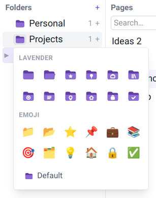
Renaming and deleting pages
What it does. Pages are named when you create them and can be renamed or removed at any time.
How to use it. To rename a page, edit its title at the top of the editor. To delete it, right-click it in the Pages panel and choose Delete, then confirm.
Natural sort order
What it does. Folders and pages are sorted the way people count, so Ideas 2 comes before Ideas 10.
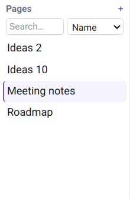
Writing on the canvas
Click anywhere and type
What it does. Each page is an open canvas. Clicking an empty spot creates a segment, a text box, exactly where you clicked. Lay out notes the way you think: side-by-side columns, a to-do list in the corner, a summary at the bottom.
How to use it.
- Click any empty spot on the page. A new segment appears there.
- Click inside the segment and start typing.
- Click somewhere else on the page to start another segment.
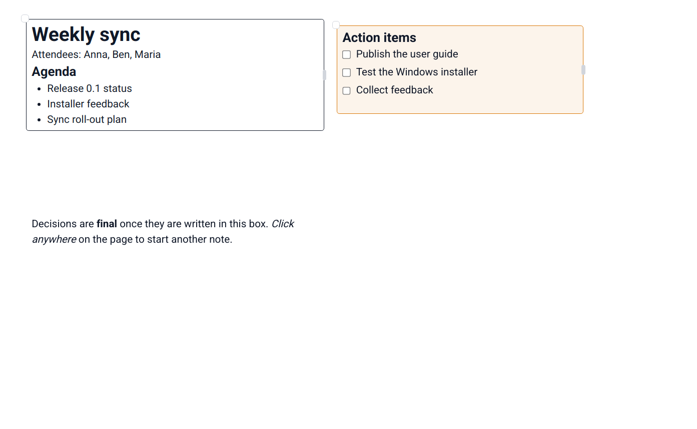
Moving and resizing segments
What it does. Segments have no visible border until you select one. Then a move handle (top-left corner) and a resize handle (right edge) appear.
How to use it. Drag the small circle at the top-left corner to move a segment, and the small bar on its right edge to change its width. Text reflows to fit.
Segment colours
What it does. Colour-code segments, for example orange for action items or green for decisions. A colour gives the segment a visible border and a matching soft background.
How to use it. Right-click the segment (not on a misspelled word). Pick one of the nine quick picks, a colour from the shades grid (ten colour families, darkest at the top), one of your recent colours, or More colours… for the colour wheel (see Page colours). None removes the colour.
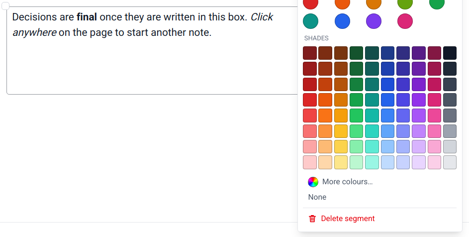
Deleting a segment, with Undo
What it does. Removes a segment in one step, whatever it contains, and gives you a few seconds to change your mind.
How to use it.
- Right-click the segment and choose Delete segment (at the bottom of the menu).
- A Segment deleted message appears at the bottom of the window with a bar that counts down.
- Click Undo (or press Ctrl+Z while you're not typing in a segment) to bring it back exactly as it was, or click ✕ to make the deletion final straight away.
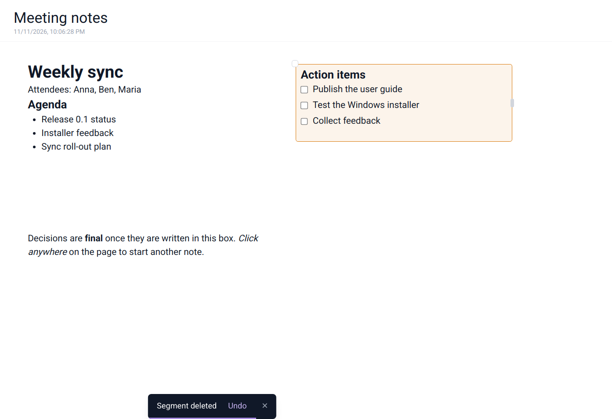
Empty segments tidy themselves away: delete all of a segment's text and click elsewhere, and it disappears, unless it has a colour.
Canvas and Linear mode
What it does. Canvas mode (the default) is free placement. Linear mode shows the same segments as one continuous document, top to bottom, which is handy for reading, reviewing or printing.
How to use it. Click Canvas in the status bar to switch to Linear, and click again to switch back. Each page remembers its mode.
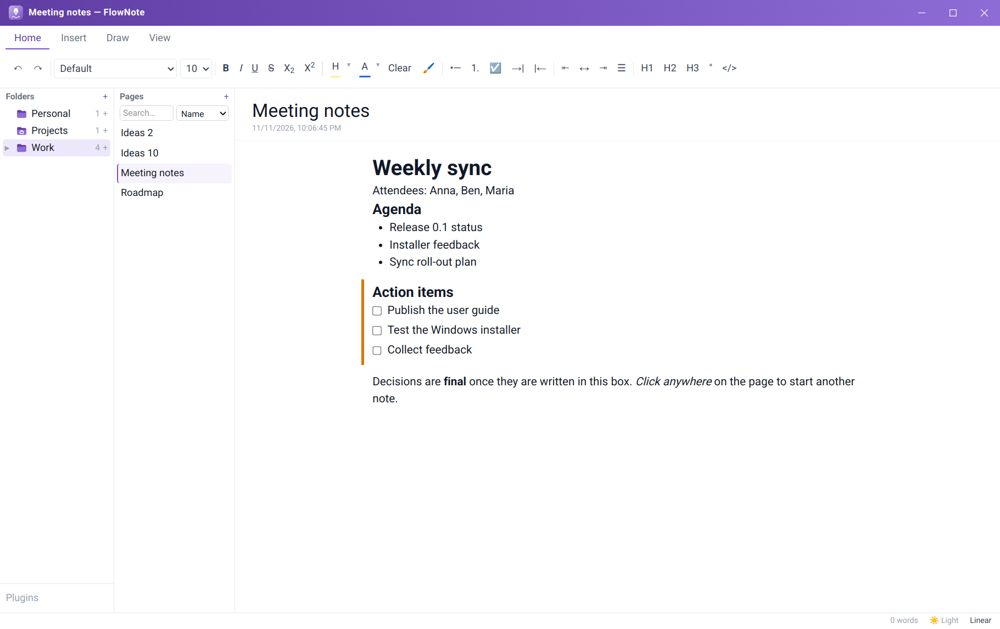
Spell check
What it does. Underlines misspelled words with a wavy red line as you type.
How to use it. Right-click an underlined word for suggestions, or choose Add to Dictionary so it isn't flagged again. Your dictionary is kept with your notes.
Formatting text
Select some text and use the Home tab of the ribbon:
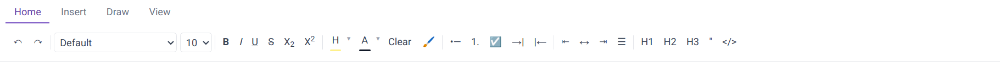
| Group | Buttons |
|---|---|
| History | Undo, Redo |
| Font | Font family (Default, Sans Serif, Serif, Monospace…), font size |
| Text style | Bold, Italic, Underline, |
| Lists | Bulleted list, Numbered list, Checklist, Indent, Outdent |
| Alignment | Left, Centre, Right, Justify |
| Blocks | Heading 1, Heading 2, Heading 3, Quote, Code |
Fonts, text styles and colours
What it does. Choose the font family and size; apply bold, italic, underline, strikethrough, subscript and superscript; highlight text and change its colour, each from a palette.
How to use it. Select text and click a button, or use the keyboard shortcuts (chapter Keyboard shortcuts). The small ▾ next to Highlight and Text colour opens their colour choices.
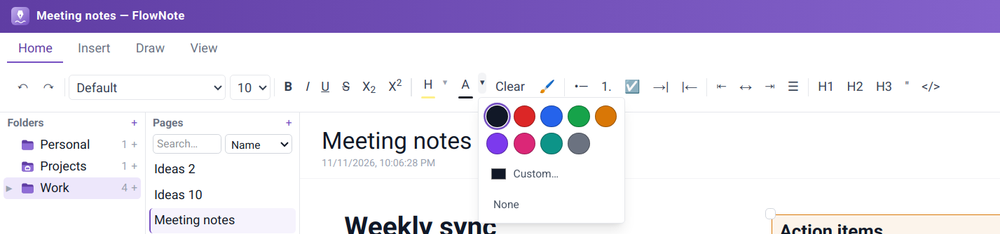
Lists, checklists and alignment
What it does. Bulleted and numbered lists, checklists with tick boxes, indent and outdent for nesting, and left, centre, right or justified alignment.
How to use it. Use the Lists and Alignment groups, or Tab / Shift+Tab inside a list. Click a checklist box to tick it.
Headings, quotes and code
What it does. Three heading levels to structure a page, block quotes, and inline or block code.
How to use it. Put the cursor in a line and click H1, H2, H3, Quote or Code in the Blocks group, or use the "/" menu (next chapter).
Format Painter
What it does. Copies the formatting of one piece of text onto another, like the paintbrush in office suites.
How to use it.
- Select text whose look you like.
- Click the brush.
- Select the text you want to look the same.
Double-click the brush to keep painting until you click it again.
Clear formatting, Undo and Redo
What it does. Clear strips all formatting from the selection. Undo and Redo step backwards and forwards through your changes.
Inserting content
The "/" block menu
What it does. A quick way to insert any kind of block without reaching for the ribbon: text, three heading levels, bulleted and numbered lists, checklist, quote, code block, table, blocks from plugins, and Ask AI.
How to use it. Type / at the start of a line (or after a space). Use ↑ ↓ and Enter, or click an item. Esc closes the menu.
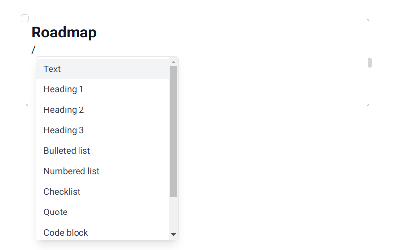
Code blocks with syntax highlighting
What it does. Monospaced code blocks with colour highlighting for many programming languages. The chosen language is saved with the note.
How to use it. Insert a Code block from the "/" menu or the ribbon (</>), then choose the language from the drop-down in its top-right corner.
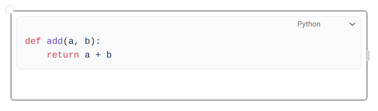
Tables
What it does. Adds a table to a segment. The first row is a header: bold, with a coloured background (FlowNote lavender by default) and text that FlowNote keeps readable whatever header colour you choose. Tables are saved, searched and synced like any other text, and show in both Canvas and Linear mode. Tables pasted from other apps keep their rows and columns.
How to insert a table.
- Click in a segment where the table should go.
- Type / and choose Table…, or open the Insert tab and click Insert table.
- In the grid, move the mouse (or the arrow keys) to choose the number of rows and columns, then click (or press Enter).
- Type into the header cell. Press Tab to move to the next cell and Shift+Tab to go back.
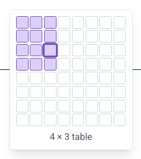
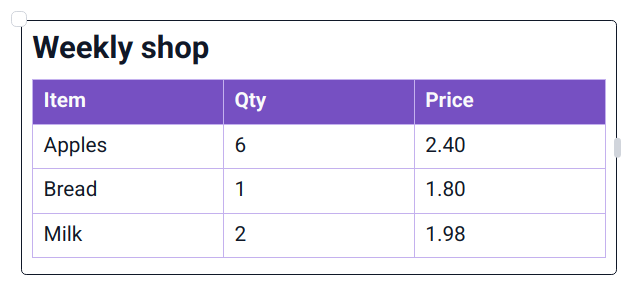
How to change a table. Put the cursor in a cell and use the table tools on the Insert tab. They act on the row or column the cursor is in:
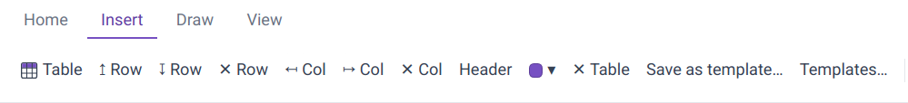
| Button | What it does |
|---|---|
| ↥ Row / ↧ Row | Insert a row above / below |
| ✕ Row | Delete the row |
| ↤ Col / ↦ Col | Insert a column to the left / right |
| ✕ Col | Delete the column |
| Header | Turn the header row on or off |
| Header colour (●▾) | Choose the header row's background colour from the swatches, or Custom… for any colour. None removes it. |
| ✕ Table | Delete the whole table |
Drag the border between two columns to make a column wider or narrower.
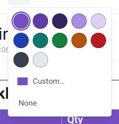
Table templates
What it does. Saves a table's layout so you can reuse it: the number of rows and columns, column widths, header text and header colour, and, if you want, the text in the other cells too. Templates are available on every page. An inserted template is an independent copy, so changing it doesn't change the template.
How to save a template.
- Put the cursor anywhere in the table.
- On the Insert tab, click Save as template….
- Type a name. Tick Include cell contents if the body text should be saved too (it's off by default, so only the structure and header are kept).
- Click Save. If a template with that name already exists, FlowNote asks before replacing it.
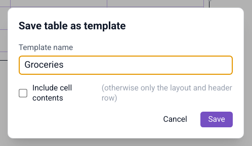
How to insert a template. Open the table picker (Insert table, or / → Table…) and click the template under From template. Or type /table followed by part of the template's name, for example /table groc, and press Enter on the match.
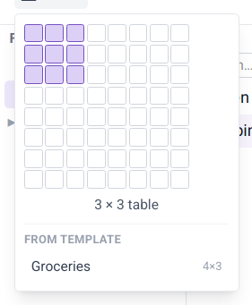
How to manage templates. On the Insert tab, click Templates… to preview, rename or delete your templates. Tables already in your notes are not affected.
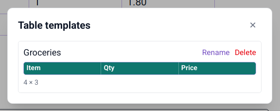
Templates are kept on this computer. They aren't synced to your other devices yet.
Pictures and file attachments
What it does. Paste files and pictures straight into a note. Pictures are shown inline. Other files can be attached as a compact chip (icon, name, size) that opens in its usual app, or embedded as an inline preview. Files are copied into FlowNote's own storage, so notes keep working if the original moves.
How to use it.
- Copy a file or picture, for example in your file manager, or take a screenshot.
- Click in a segment and press Ctrl+V.
- Screenshots and copied images are embedded straight away. For other files choose Attach as file or Embed in note.
- Drag an embedded item's corner to resize it.
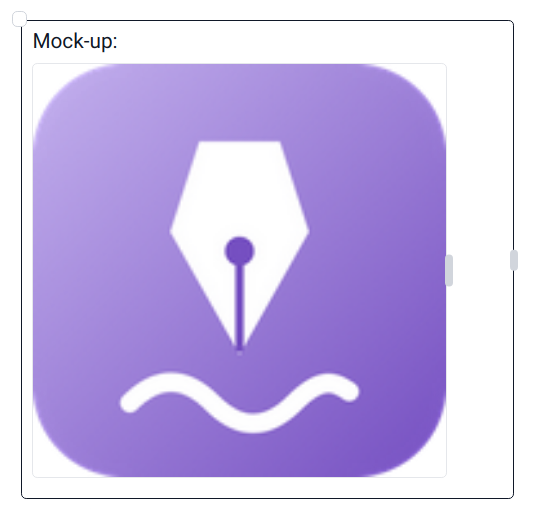
Drawing and handwriting
What it does. Draw or handwrite anywhere on a page, over and around your text: sketches, diagrams, arrows, signatures. Ink is saved with the page.
How to use it.
- Open the Draw tab.
- Choose Pen (solid line), Marker (translucent, like a highlighter) or Eraser (removes strokes), and one of the colour swatches.
- Draw with the mouse, a touchpad or a pen tablet.
- Switch back to the Home tab to type again. Your drawing stays on the page.
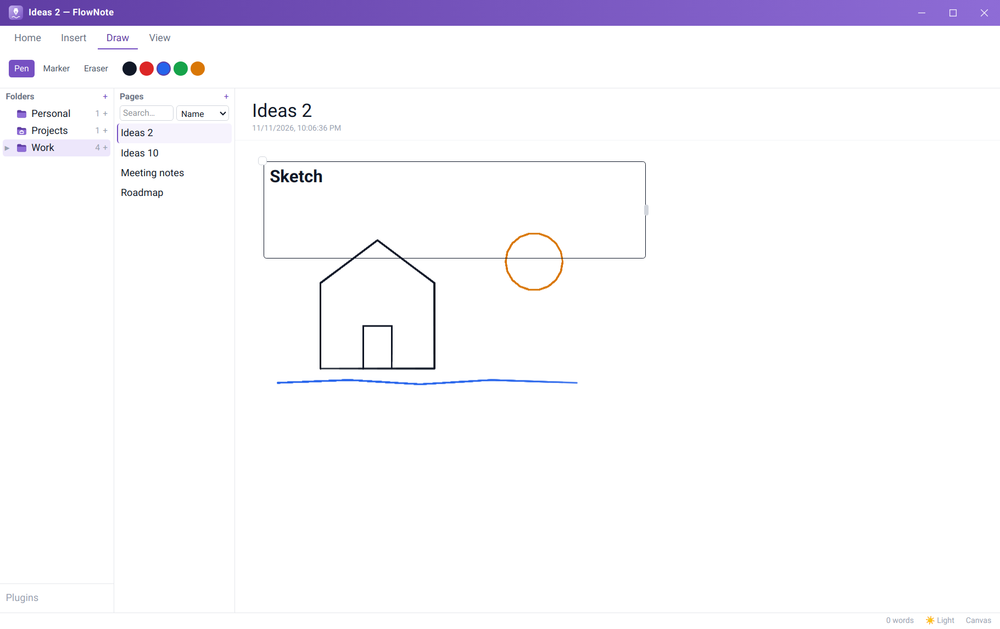
Finding notes
What it does. Finds pages in two ways. Name matches page names. Contents searches the full text of every page in every folder, using a fast full-text index kept up to date as you type.
How to use it.
- Type in the search box at the top of the Pages panel.
- Pick Name or Contents from the drop-down next to it.
- Click a result to open it. Clear the search box to go back to the folder's page list.
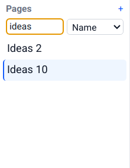
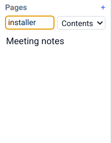
Making FlowNote look the way you like
Light and dark theme
What it does. A full dark theme for evening work, a light theme, or System to follow your computer's setting automatically.
How to use it. Click the theme button in the status bar to cycle System → Light → Dark.
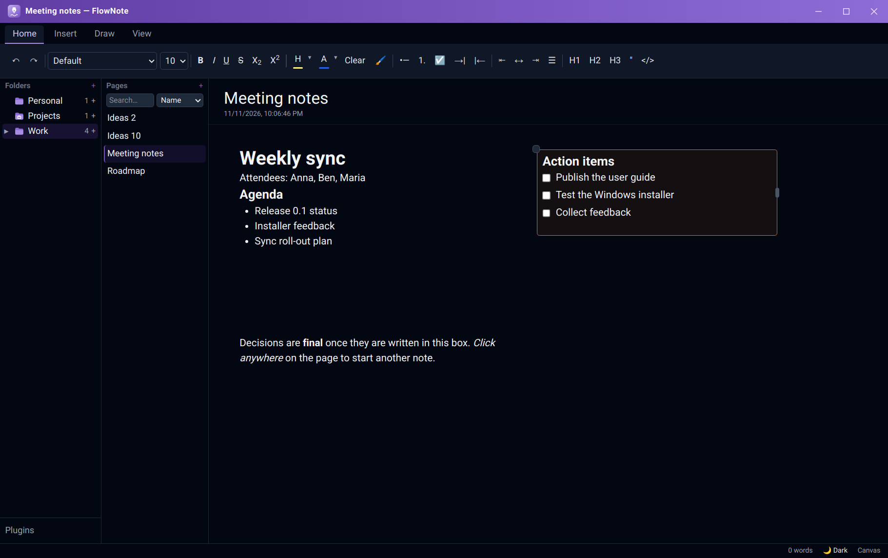
Page colours
What it does. Gives a page a background colour: a paper tone (Ivory, Sepia, Cream, Mint, Sky, Lavender, Rose, Grey), any of 100 shades, or any colour at all from the colour wheel. Set it for one page, or as the default for all pages. Dark colours work too: the text turns light to stay readable. Page colours show in the light theme.
How to use it.
- On the View tab, click Page colour.
- Under Apply to, choose This page or All pages (the default for every page that doesn't have its own colour).
- Pick a colour from Paper, Shades (ten colour families, darkest at the top) or Recent, or click More colours… for the colour wheel.
- Use default (for this page) or White (for all pages) removes the colour.
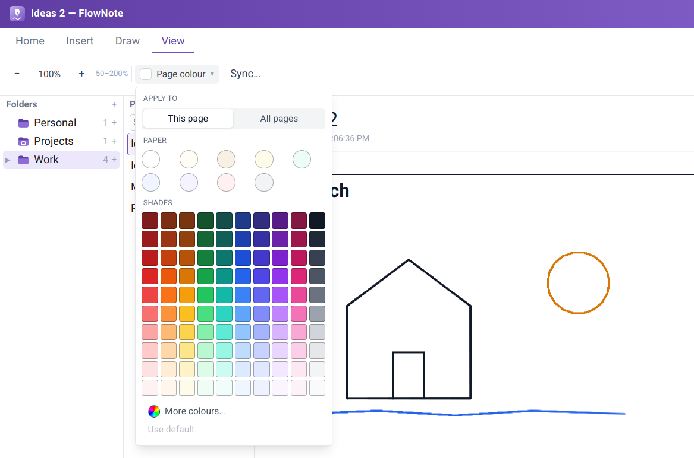
The colour wheel. Drag across the wheel (or use the arrow keys) to choose the colour, use the Brightness slider to make it lighter or darker, or type an exact hex code such as #7dd3fc. The two squares compare the current and the new colour. Nothing changes until you click Apply, which also adds the colour to Recent; Cancel goes back to the palette.
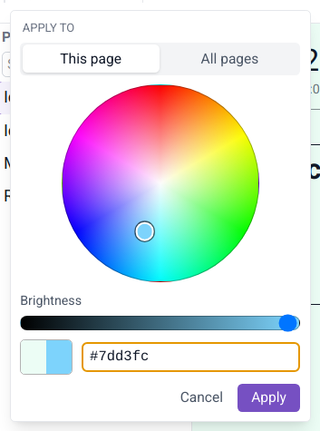
Contrast assistant
What it does. Watches for coloured text that becomes hard to read on the page colour you picked, and offers to fix it. Nothing changes unless you ask.
How to use it. When the notice appears, choose Adjust (recolour the affected text so it's readable), Show me (briefly highlight it) or Keep (leave it and don't ask again for this colour).
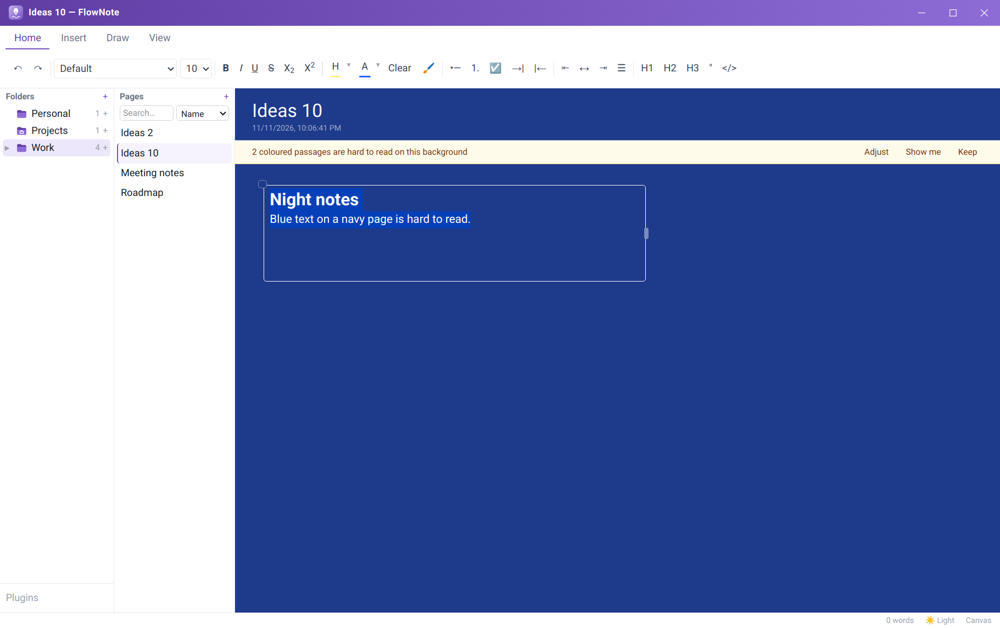
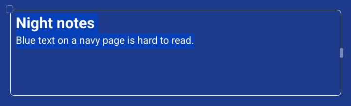
Zoom and resizable panels
What it does. Zoom the canvas from 50% to 200%, and give each panel the room you need.
How to use it. On the View tab, use zoom out (−), zoom in (+), or the reset button that shows the current zoom level. Drag the borders between the folder, page and editor panels to resize them.
Status bar
What it does. Shows the sync state, the theme switch, and the page's editing mode (Canvas or Linear). Each one is a button.
AI writing assistant
What it does. Drafts text for you from a prompt: summaries, outlines, rewrites, ideas. You choose the AI service, and nothing is sent anywhere until you set one up and ask. Supported services:
| Service | Needs | Where your text goes |
|---|---|---|
| Ollama (local) | Ollama running on your computer | Nowhere. It stays on your computer |
| Claude (Anthropic) | An API key | Anthropic |
| Gemini (Google) | An API key | |
| OpenAI | An API key | OpenAI |
| Other OpenAI-compatible service | Its address (and key, if it needs one) | That service |
How to set it up.
- On the Insert tab, click ⚙ (AI settings).
- Click Add provider and pick a service.
- Check the model name, paste an API key if the service needs one, and save.
- Add more providers if you like, and mark one as the default.
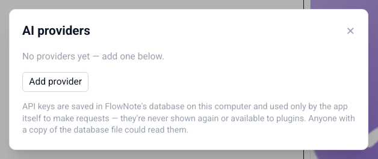
How to use it.
- Type a request in the Ask AI… box on the Insert tab and click Generate, or type / in a segment and choose Ask AI….
- The answer streams into the segment as a tinted draft. Stop ends a long answer early.
- Choose Keep (Ctrl+Enter), Discard (Esc) or Try again.
API keys are stored in FlowNote's database on your computer and used only to make your requests. They're never shown again and are not available to plugins.
Plugins
What it does. Plugins add new kinds of blocks to FlowNote. Each plugin runs in its own sandbox and can only do what its manifest declares (for example, store its own data). The first plugin, Spreadsheet, adds a live grid you can type numbers and text into, inside any segment.
How to install a plugin.
- Click Plugins at the bottom of the Folders panel.
- Click Install…, paste the plugin's manifest, and click Install.
- The plugin appears in the list. Untick Enabled to switch it off, or click Uninstall to remove it.
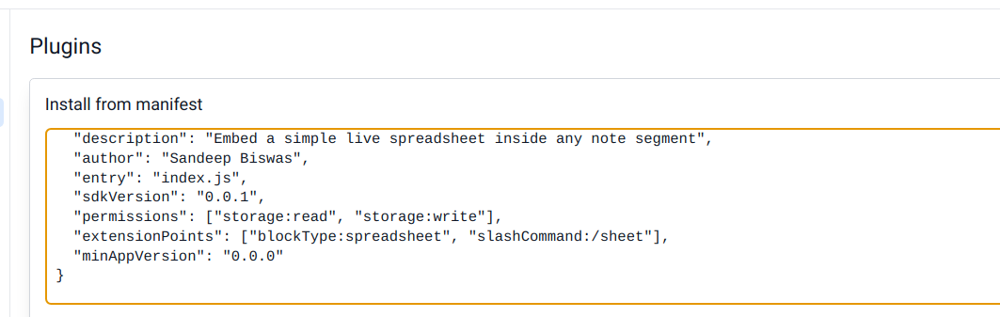
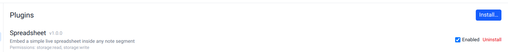
How to use a plugin block. Type / in a segment. Plugin blocks appear in the menu after the built-in ones. Choose Spreadsheet to insert a grid.
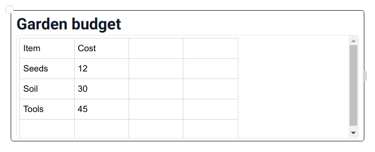
Known issue on Windows: in this version, plugins don't load in the Windows app, so Spreadsheet doesn't appear in the "/" menu there. Plugins work on Linux. A fix is planned.
Developers can build their own plugins with the FlowNote plugin SDK (@flownote/sdk) and the @flownote/cli scaffolding tool in the FlowNote source repository.
Keeping your notes safe
Where your notes are stored
| Linux | Windows | |
|---|---|---|
| Notes database | ~/.config/@flownote/electron/flownote.sqlite3 | %APPDATA%\com.sandeep.flownote\flownote.sqlite3 |
| Attached files | ~/.config/@flownote/electron/attachments/ | %APPDATA%\com.sandeep.flownote\attachments\ |
| Copies made before syncing | ~/.config/@flownote/electron/backups/ | %APPDATA%\com.sandeep.flownote\backups\ |
To make a manual backup, close FlowNote and copy that folder somewhere safe (see Backing up your notes in Part 1).
Backup & Sync
What it does. Keeps an end-to-end encrypted copy of your notes in a place you choose, and keeps several computers in step. Your notes are encrypted on your computer before they leave it, so only your devices can read them, not the cloud provider. FlowNote works offline first: changes sync when you're back online.
- Your own storage. OneDrive (kept in Apps/FlowNote), Google Drive (a FlowNote folder), or any folder on your computer, which works with Dropbox, Syncthing, a USB drive or a network share.
- Safety copies. FlowNote saves a copy of your notes before it applies changes from other devices.
How to set it up.
- On the View tab, click Sync….
- Choose where to sync: OneDrive, Google Drive, or A folder on this computer.
- For OneDrive or Google Drive, click Continue to … sign-in and sign in with your browser.
- Choose a passphrase. Use the same passphrase on every device you want to sync.
- Give this device a name, so you can tell your devices apart.
- On your other computers, choose the same place and enter the same passphrase.
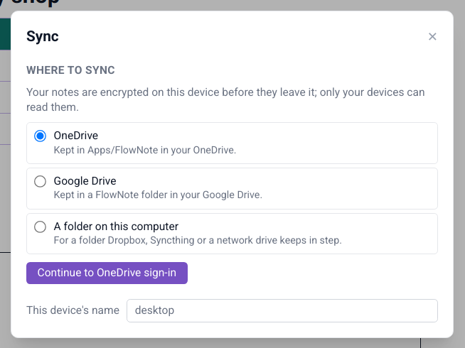
Keep your passphrase somewhere safe. Without it, nobody (including you) can read the synced copy. Your notes on this computer are unaffected.
Sync status
What it does. The status bar always shows where things stand: Synced, Syncing…, Not synced yet, Sync needs attention or Sync error. Click it to open the sync settings.
Conflict handling
What it does. If the same segment was edited on two devices at the same time, nothing is lost: FlowNote keeps both versions side by side and marks the other device's copy with a badge.
How to use it. Keep what you need from each version and delete the rest.
Mass-deletion safeguard
What it does. If another device deletes a large part of your notes at once (by accident, or because something went wrong), FlowNote holds those deletions and asks first.
How to use it. Apply carries the deletions out here, Not now hides the question for this session, and Details opens the sync settings.
Keyboard shortcuts
These work while you're typing in a segment.
| Action | Shortcut |
|---|---|
| Bold / Italic / Underline | Ctrl+B / Ctrl+I / Ctrl+U |
| Strikethrough | Ctrl+Shift+S |
| Subscript / Superscript | Ctrl+, / Ctrl+. |
| Highlight | Ctrl+Shift+H |
| Heading 1 / 2 / 3 | Ctrl+Alt+1 / 2 / 3 |
| Bulleted list / Numbered list / Checklist | Ctrl+Shift+8 / 7 / 9 |
| Indent / Outdent a list item | Tab / Shift+Tab |
| Next / previous table cell | Tab / Shift+Tab |
| Quote | Ctrl+Shift+B |
| Code block | Ctrl+Alt+C |
| Insert block menu | / |
| Insert a table template | / then table and part of its name |
| Undo / Redo | Ctrl+Z / Ctrl+Shift+Z (or Ctrl+Y) |
| Undo deleting a segment (while the message shows) | Ctrl+Z, when you're not typing in a segment |
| Keep / discard an AI draft | Ctrl+Enter / Esc |
| Select all text in a segment | Ctrl+A |
| Paste a picture or file | Ctrl+V |
| Close a menu or dialog | Esc |
Troubleshooting
For problems while installing or uninstalling, see Solving installation problems in Part 1.
| Problem | What to do |
|---|---|
| Typing after clicking the page does nothing | Click inside the new segment first, then type. |
| "File name must start with a letter" | Page names can start with any letter, lowercase or capital, but not with a number or a symbol. Put a word first, e.g. Draft 2 instead of 2nd draft. |
| I deleted a segment by mistake | Click Undo in the message at the bottom of the window, or press Ctrl+Z, before it disappears (a few seconds). |
| The table buttons on the Insert tab are greyed out | They act on the table the cursor is in. Click inside a table cell first. |
| My table template isn't on my other computer | Templates aren't synced yet. Save the template again on the other computer. |
| The Spreadsheet plugin doesn't appear in the "/" menu on Windows | A known issue in this version: plugins don't load yet in the Windows app. It works on Linux. A fix is planned. |
| Sync says it needs attention | Open View → Sync… to see what's wrong. Often you just need to sign in again. |
| FlowNote takes several seconds to start (Linux, just-for-me install) | Install FUSE 2: sudo apt install libfuse2t64 (or libfuse2), then run the installer again. |
Frequently asked questions
Does FlowNote need an internet connection?
No. Everything works offline. The internet is only used for Backup & Sync to OneDrive or Google Drive, and for AI services you choose to set up.
Will uninstalling delete my notes?
Not unless you ask it to. Both the Linux and Windows uninstallers keep your notes by default.
How do I move my notes to a new computer?
Set up Backup & Sync on both computers with the same passphrase. Or close FlowNote, copy the data folder (see Where your notes are stored) to the same place on the new computer, and start FlowNote there.
Can I use FlowNote without segments, like a normal document?
Yes. Switch the page to Linear mode in the status bar.
Is my data sent to an AI service?
Only if you add an AI provider yourself (Insert → ⚙), and only the text you ask it about. With Ollama (local), nothing leaves your computer.